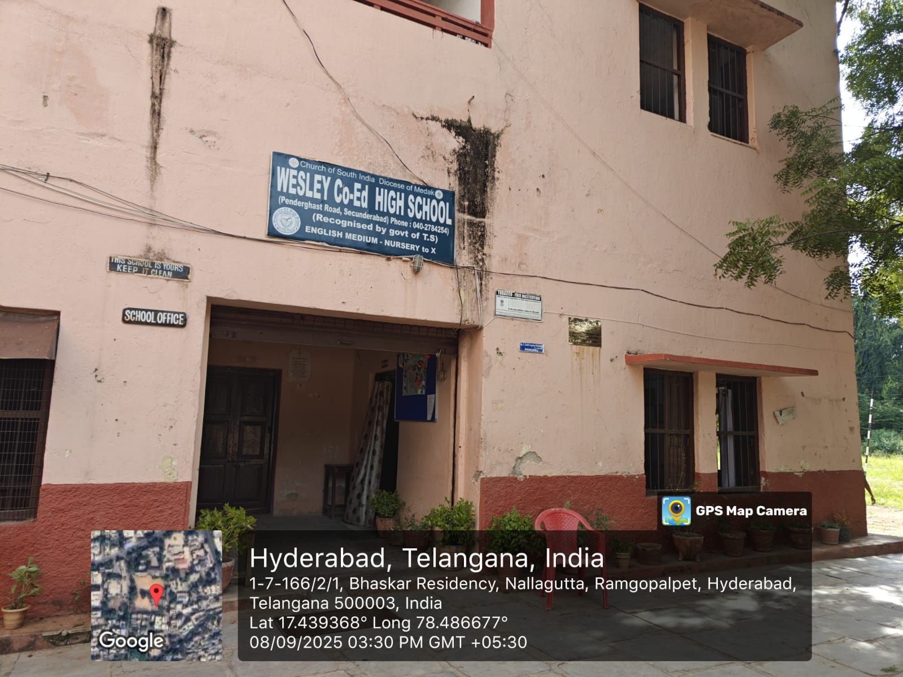
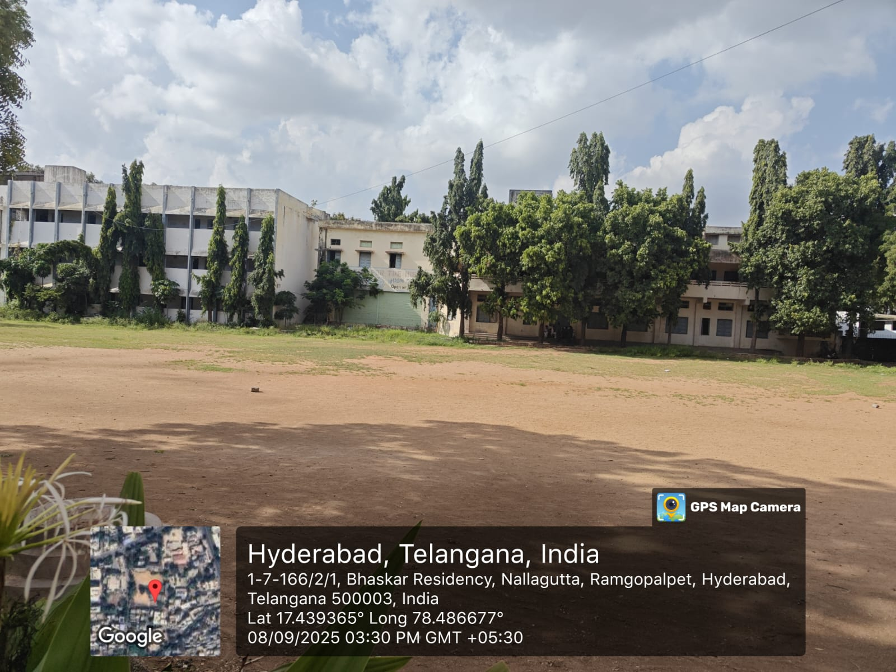
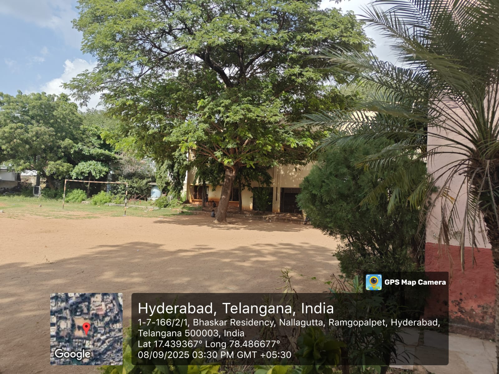
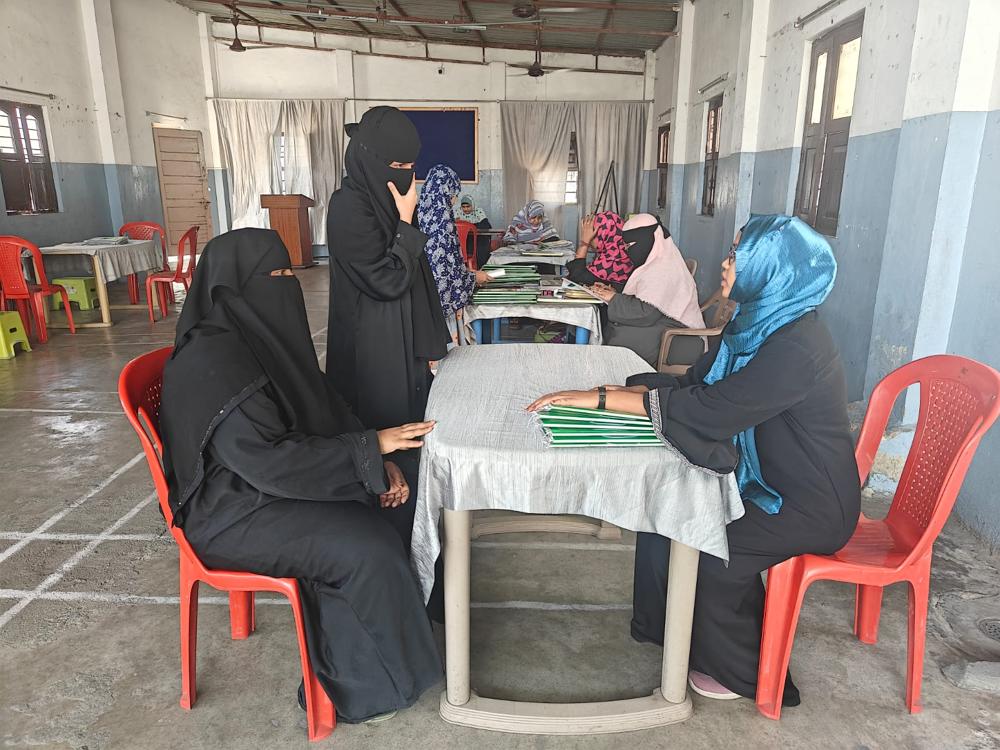
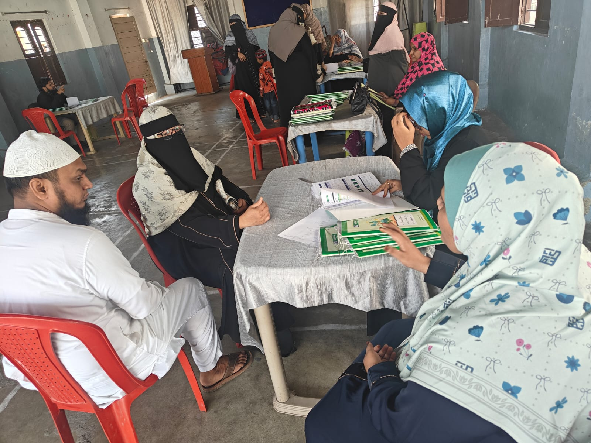
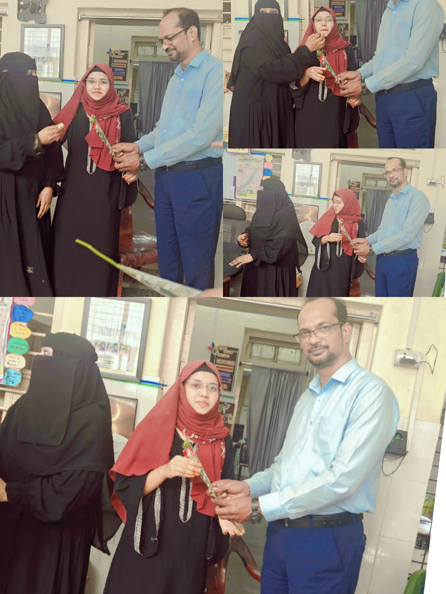
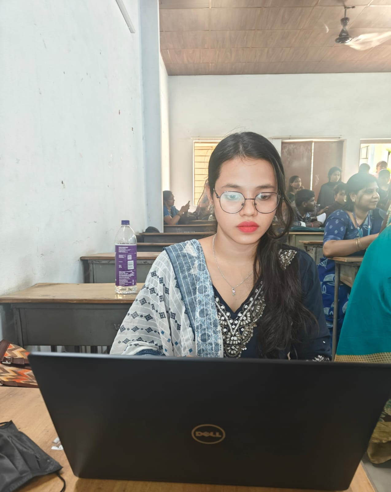
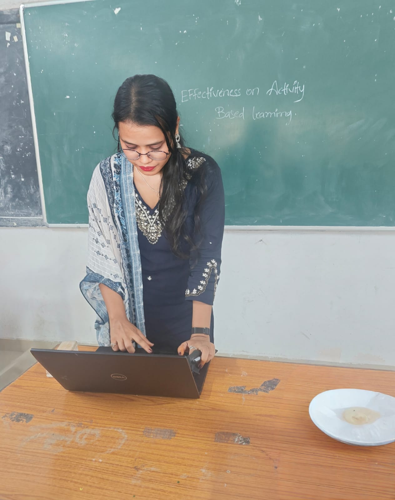
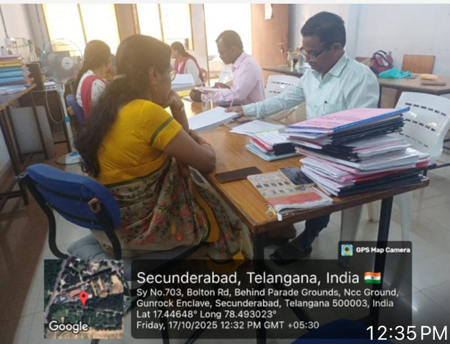
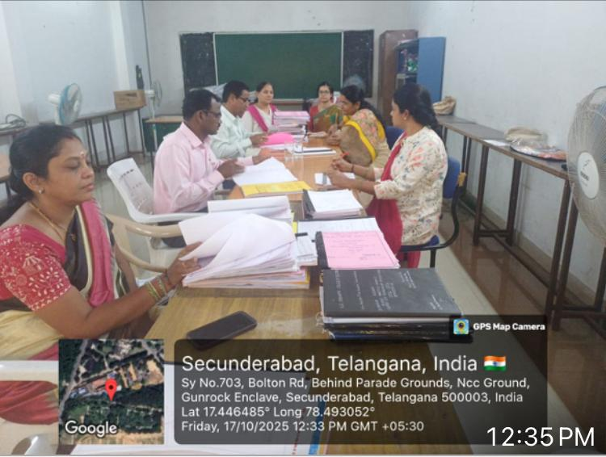

School Internship & Experience
Bridging educational theory and active classroom practice across professional teaching environments.
Wesley Co-Ed High School
Penderghast Road, Secunderabad
During my main B.Ed school internship at Wesley Co-Ed High School, I immersed myself in daily school operations, active lesson deliveries, and community engagement.
From managing student performance and teaching Biological Sciences and Hindi to coordinating school activities, this environment molded my core classroom management skills.



Parent-Teacher Interactions & 100% SSC Achievement
An integral part of teaching is communicating student progress with parents and celebrating collective academic triumphs. I actively managed Parent-Teacher Meetings (PTM) and celebrated institutional milestones like achieving 100% SSC results with faculty.

Parent-Teacher Meeting
Reviewing student reports and academic progress.

Student Performance Review
Collaborating with families to support student growth.

100% SSC Achievement
Celebrating institutional academic excellence with staff.
MS Creative School & Board Examinations
Musheerabad, Hyderabad (1 Year Experience)
Alongside my teaching practice, I completed 1 year of professional experience at MS Creative School in Musheerabad, Hyderabad, sharpening my instructional techniques and curriculum delivery.
Additionally, I took on formal government examination responsibilities, serving as an Invigilator/Officer for public board examinations (including TOSS Intermediate and SSC public exams at GHS Kavadiguda).
Official Attendance Certificate

Certified duty record issued by Government High School, Kavadiguda, Hyderabad.
Dissertation & Institutional Inspections
Professional teacher training involves rigorous action research and compliance with institutional evaluation standards. Here is a glimpse into my dissertation presentation on activity-based learning and official administrative inspections.

Dissertation Research
Analyzing data for activity-based learning.

Effectiveness Study
Defending research thesis components.

Institutional Inspection
Managing administrative records and files.

Compliance Review
Coordinating institutional documentation audits.
Explore More Experience Pages
Continue browsing my specialized creative records and peer-teaching demonstrations.